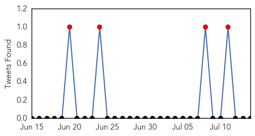
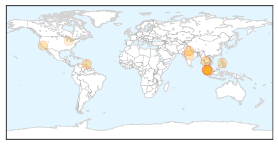
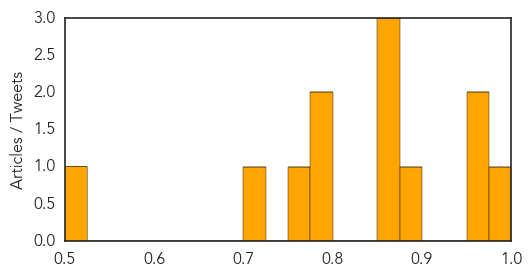

Measles
30-Day Web Trend
0 alerts, 0 warnings

30-Day Twitter Trend
0 alerts, 0 warnings

Article Locations

Article Confidences

Top Articles:
- 0.936
- Four More Cases of Measles Confirmed in Wichita Area
- 0.799
- Somali Children To Be Vaccinated On $1.4M Fund
- 0.788
- UN emergency fund provides $1.4 million to vaccinate Somali children
- 0.752
- Médecins Sans Frontières Ireland
- 0.671
- Health Situation Report #8 - Pakistan: North Waziristan Displacement - Pakistan
- 0.667
- Migrant kids better vaccinated than U.S. kids, but Fox News stokes ‘germ’ fears anyway
- 0.665
- Asia Pacific Region: Weekly Regional Humanitarian Snapshot 8 - 14 July 2014 - Philippines
- 0.556
- Oklahoma lawmaker wants quarantine of migrant children housed in state
Top Tweets:
-
No tweets found for Jul 14, 2014
Dengue Fever
30-Day Web Trend
5 alerts, 5 warnings

30-Day Twitter Trend
4 alerts, 0 warnings

Article Locations
Article Confidences
Top Articles:
- 0.976
- Health department initiates steps to prevent seasonal diseases
- 0.968
- Chikunguyna confirmed in Trinidad
- 0.955
- Test vaccine for dengue shows promise
- 0.885
- Govt sets two-month target to reduce dengue cases - Nation
- 0.862
- Putrajaya targets two months to reduce dengue fever cases – Bernama
- 0.857
- New Vaccine for Dengue Shows Promise
- 0.853
- One death, 22 dengue cases stirs BMC to start fogging
- 0.798
- Two-Month Dengue Target
- 0.787
- 'Two months to stem dengue rise' - Nation
- 0.754
- Cautious optimism greets results of Asian dengue vaccine trial
- 0.723
- Task force to combat dengue
- 0.520
- Vaccinate mosquitoes to stop malaria?
Top Tweets:
-
No tweets found for Jul 14, 2014